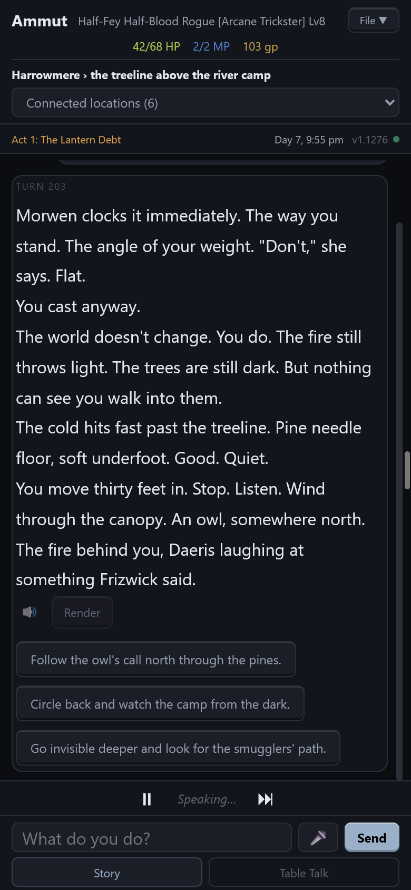
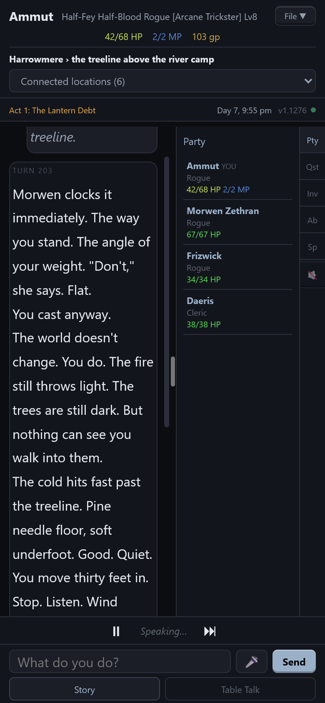

Traffic and Dragons is a sword & sorcery role-playing game that runs entirely in your browser. You create a character, and an AI Game Master narrates a living adventure around you — tracking your health, gold, inventory, quests, and the people you meet, across sessions. There's nothing to install and nothing to buy: you sign in with Google or GitHub, and during the beta the operator's account powers the Game Master.
Signing in is the whole setup. The extras below come with it — nothing to sign up for, nothing to paste:
The game is a proper web app — installed to your home screen it opens fullscreen with its own icon, like any native app.
First launch drops you into a six-step character builder. There are no wrong answers — lean into whatever sounds fun:
| Step | What you're choosing |
|---|---|
| 1 · Tone | The flavor of the whole world — High Fantasy, Gritty, Sword & Sorcery, Dark Horror, Political Intrigue, or write your own. This shapes how the Game Master narrates everything. |
| 2 · Identity | Gender, age, and your ancestry — Human, Elf, Dwarf, Gnome, Half-Blood, Hollow-Born, or Cambion, each with sub-lineages and their own stat flavor. |
| 3 · Class | Your profession: Warrior, Rogue, Sorcerer, Ranger, Primal, Paladin, Cleric, Druid, or Necromancer. |
| 4 · Attributes | Your six ability scores. Roll (fate decides, auto-arranged sensibly) or Point Buy (you budget 27 points). Plus your moral alignment. |
| 5 · Finishing touches | Appearance, backstory, and a portrait — upload a picture, or generate one from your character sheet (signed in — it comes from your weekly image allowance). |
| 6 · Review | Name your campaign, pick a starting location and level (1 is the classic experience), optionally add companions, and confirm. |
Hit confirm and the Game Master opens your story with your first scene. From there:
Two views of the same moment on a phone, in the default dark palette (turn Dark mode off for parchment). Desktop lays the same pieces out wider: the side panel ⑥ is always open on the right, and the top bar also carries World State and Render. The numbers match the sections below:

1 2 3 4 5 6 7 8
6Your vital signs at a glance — name, class & level, HP, MP, gold. File ▾ is everything else — see the next section. On desktop the bar also has World State (a slide-out panel with your location, the time and weather, everyone you have met and the quest journal) and Render (paints the scene); on a phone both live in the File menu.
The place line — the world and the spot within it — and Connected locations, every way out the map knows. Pick one and its sentence lands in the input box for you to send or edit; it never sends by itself. (On desktop the same ways are chips in the top bar.)
The act you are in, the campaign clock (day and hour), the version, and the small dots at the end: green means the Game Master's memory is in good health, and a cloud badge shows while your account syncs. (Desktop shows the memory ticker here — tokens, chapters, people met, turn.)
The main scroll — the Game Master's narration, your own lines, dice results, a turn number over each scene. Under the latest scene: 🔊 reads that scene aloud, Render paints it, and Shop appears when there is something for sale where you stand. When a fight starts, a combat tracker — each enemy's health bar and the round — appears at the top of this area and vanishes when the dust settles; tap an enemy's name for what you know about it.
Three suggestions from the Game Master and a dashed fourth from the game itself — rest when you are hurt, use an item you carry, take an offered quest, buy something here, or a reckless wildcard. Tap one to edit it; hold it (Ctrl-click on desktop) to send it as it is.
On a phone it hides behind the thin handle at the right edge: drag the handle left to open it as wide as you like, double-tap it to open or close. Down its edge run the tabs — Pty (the party, with everyone's health), Qst (quests: accept, decline, track), Inv, Ab, Sp — and the 🔈 narration toggle. Tap your own name in Party to open your character sheet; tap a companion for theirs. On desktop the panel is always open with every section in view.
Appears while the narrator reads — ⏸ pauses and resumes, ⏭ skips ahead. Narration itself is switched on and off with the 🔈 (in the panel's tab column on a phone, in the top bar on desktop).
The box where you say what you do (× clears it), the 🎤 mic for dictating instead of typing, and Send. Below it, two tabs: Story (the adventure) and Table Talk (out-of-character talk with the Game Master — a dot marks unread replies).
File ▾ is home to everything that isn't moment-to-moment play. The headliners:
| Item | What it does |
|---|---|
| 👤 Account… | Your sign-in, the turns you have used this month, and sign out. |
| 🏠 Home | The curated stories, your library, the Blueprint Designer, the Character Editor, the reference bibles and the Player FAQ. |
| ❓ Player FAQ | The short answers — the first five minutes and the questions the help desk knows — in their own tab. |
| 🚗 Car Mode | Hands-free play: it reads the scene aloud, listens for your spoken action, and keeps the loop going. Passenger-seat approved. |
| 🗣 Talk to… | A spoken conversation with your character or a companion, outside the story — nothing said there changes the campaign. |
| 💾 Save / Load ▶ | 📁 Campaigns… — your saved adventures: run several at once, switch between them, pull one down onto a new device. Save/Load Game (local) — file-based backups of the whole campaign. Export Character — save your hero as a portable .char file or to your account library. Import Character — bring a hero in: play as them in a new campaign, or add them to the current party as a companion. Export as Blueprint — distill your campaign into a reusable template others can play. Save story to account — keep a finished tale as a memento. |
| ⚠ Report bug… | Send a problem report; the form shows exactly what it sends before you send it. |
| ⚙ Settings ▶ | The settings drawer — details below. |
| ⟳ Clear cache & reload | The universal un-sticker. If the game ever looks stale or weird, this is the button. |
| Item | What it does |
|---|---|
| 🌙 Dark mode | On by default; off is the parchment palette. |
| Large text | Bigger type everywhere. Off by default. |
| 🔊 Audio ▶ | Voice Settings… — pick the narration voice (the built-in voice needs nothing; signed in, the cloud readers your account includes are listed). UI sounds — small earcons for turns and rolls, on by default. Ambience — a quiet bed of sound that follows the scene, on by default, with its volume slider. |
| 📖 Narrative options ▶ | Narrative rules — house rules the GM must always follow ("no spiders," "my dog is immortal"). ✍ Prose style — the voice the narration is written in; Spare & Mythic to start with. 18+ Adult content — opt into mature language and themes; off by default. Buttons ride the GM’s turn — the suggested actions arrive with the scene. Player rolls own dice — on by default; off lets the Game Master roll. Name the stake before a roll — the GM says what is at risk before you throw. |
| Voice input | 🎤 Auto-send voice input (spoken actions send themselves), 🚗 Auto-listen after narration, 🛡 Confirm unclear voice input (a muddled dictation is read back before it is sent). |
| Operator rows | A 🛠 Dev tools drawer (language model, usage & cost, render options), legacy characters, the campaigns folder and the server connection exist for the operator and are hidden from players’ menus. |
| Symptom | Fix |
|---|---|
| Page looks stale or misbehaves after an update | File ▾ → Clear cache & reload. This is the universal fix — try it first. (Or a hard refresh: Ctrl+Shift+R on desktop.) |
| The GM won't respond, or the game says your account has no active subscription | Check File ▸ Account for your allowance; if it says no subscription, ask the operator — your story is safe and waiting. |
| Images won't render | Signed in, images come from a weekly included allowance — the game says when the week's are used up. Not signed in, there are no images. |
| Campaign didn't follow you to another device | Sign in with the same Google or GitHub identity on both devices, then File ▸ 💾 Save / Load ▸ 📁 Campaigns… and pull it down. |
| Something else / it ate your character | File ▸ ⚠ Report bug… — the form shows exactly what it sends. Note what you did, what you expected, and what happened instead; a screenshot helps enormously. |